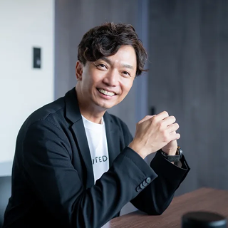
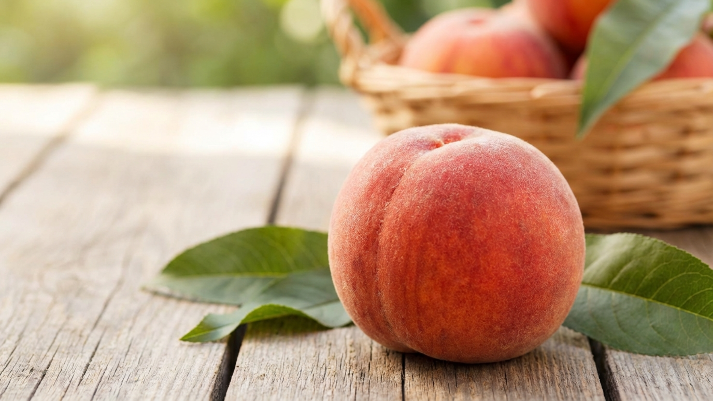
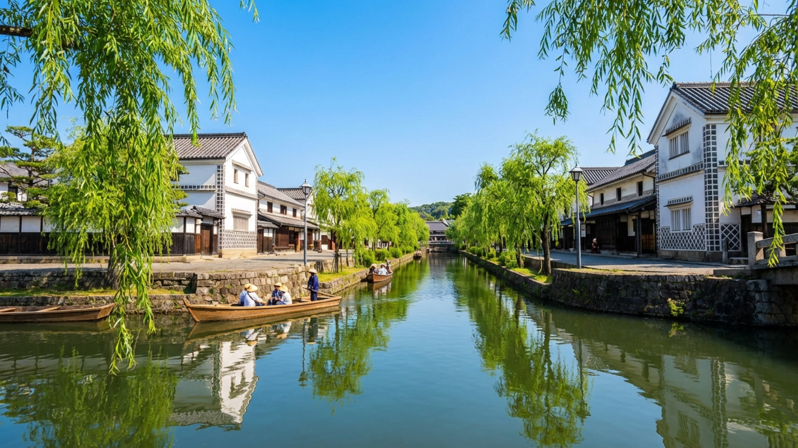
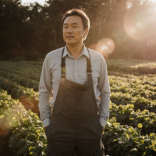
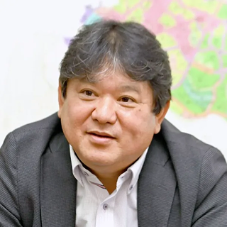

「イケイケどんどん」からの脱却と
効率化への道。
KAWANO SEIICHI
河野 誠一
代表取締役社長｜株式会社ムカフーズ
1971年宮崎市生まれ。農家の長男として育ち、県の食品メーカー勤務を経て2008年に株式会社ムカフーズを設立。「宮崎の素材を、正直に届ける」を理念に、地元23軒の契約農家と連携した食品加工・販売事業を展開。自社ブランド「HYUGA」でシンガポール・台湾への輸出も開始し、宮崎の食文化を世界へ発信し続けている。
宮崎の土が育てた、本物の味。
もともとは農家の息子でして、父の背中を見て育ちました。でも若い頃は「農業なんて古い」と思っていて（笑）。一度県外のメーカーに就職したんですが、スーパーで宮崎産の野菜が安く叩かれているのを見て、悔しくて。「自分がやらなきゃ誰がやる」と思って戻ってきました。2008年に会社を立ち上げて、今年で17年目になります。
日照時間の長さと、水のきれいさですね。宮崎は全国でも有数の日照時間を誇る県で、それが農作物の甘みや旨みに直結しています。ここで育ったものには、他の産地にはない力強さがある。私はそれを「宮崎の底力」と呼んでいます。うちの加工品は余計なものを足さない。素材が良ければ、それだけで十分なんです。
契約農家さんが今は23軒あります。私たちは値段で買い叩くことは絶対にしない。農家さんが誇りを持って作れる値段で、長く付き合うことが大事。関係が続けば、「今年はこういう品種を試してみたい」「この時期に困っているからなんとかしてほしい」という話が自然と出てくる。そこから新しい商品が生まれることも多いんです。

「イケイケどんどん」からの脱却と効率化への道。
Q：組織の改善に着手される際、どのようなことを大切にされましたか。
A：私は「無駄」が嫌いなんです。建設現場の管理は、いわば小さな会社の社長のようなものです。予算と工期の中で、いかに効率よく協力会社の方々と連携して進めていくか。効率を追求することは単に楽をすることではなく、利益を残し、それが社員の正当な評価に繋がるということなんです。
当時は「どんぶり勘定」に近い部分もありましたが、それを数値化し組織として仕組み化することに注力しました。幸いだったのは、当社の会長や社長が社員の提案を非常に柔軟に受け止める度量を持っていたことです。「こう変えたい」と提案すると、「お前が責任者になってやってみろ」と任せてくれる。そうした「社員発信」を重んじる文化があったからこそ、現場主導の組織から、戦略的な管理体制へとスムーズに移行できたのだと感じています。
Q：その「効率化」が、現在の働きやすさにも繋がっているのでしょうか。
A：かつての建設業界では、土日も現場に行くのが当たり前という風潮がありました。しかし、私たちは早い段階から「良い意味での割り切り」を推奨してきました。段取りを徹底し週末はしっかりと休む。生産性を落とさずに休みを確保する姿勢は結果として売上の向上にも繋がりました。業界に先駆けてこうした改革を進めてきた自負があります。



宮崎の土が育てた、本物の味。
もともとは農家の息子でして、父の背中を見て育ちました。でも若い頃は「農業なんて古い」と思っていて（笑）。一度県外のメーカーに就職したんですが、スーパーで宮崎産の野菜が安く叩かれているのを見て、悔しくて。「自分がやらなきゃ誰がやる」と思って戻ってきました。2008年に会社を立ち上げて、今年で17年目になります。
日照時間の長さと、水のきれいさですね。宮崎は全国でも有数の日照時間を誇る県で、それが農作物の甘みや旨みに直結しています。ここで育ったものには、他の産地にはない力強さがある。私はそれを「宮崎の底力」と呼んでいます。うちの加工品は余計なものを足さない。素材が良ければ、それだけで十分なんです。
契約農家さんが今は23軒あります。私たちは値段で買い叩くことは絶対にしない。農家さんが誇りを持って作れる値段で、長く付き合うことが大事。関係が続けば、「今年はこういう品種を試してみたい」「この時期に困っているからなんとかしてほしい」という話が自然と出てくる。そこから新しい商品が生まれることも多いんです。
次の世代に残したい、岡山の食文化。
Q：これから挑戦したいことはありますか。
A：海外展開ですね。シンガポールや台湾への輸出を始めて、現地のシェフから「日本の他県の素材とは違う」と評価をいただいています。私たちが感じている「宮崎の底力」を、世界の食卓に届けたい。日本食ブームの今だからこそ、本物の素材で勝負したいんです。
もう一つは、若い世代に農業の魅力を伝えること。地元の高校や大学と連携して、商品開発のワークショップを開いています。「農業＝大変」というイメージを変えて、「自分のアイデアが商品になる」という体験をしてもらう。それが結果的に、地域に若者が残る理由になればいいなと思っています。
Q：最後に、これから起業や挑戦をしたい人へメッセージをお願いします。
A：「自分がやらなきゃ誰がやる」という思いがあるなら、まず一歩踏み出してほしい。失敗を恐れずに、現場に立つこと。机上の理論より、土の匂いを知っている人が強い。これは私が17年間続けてきて、心から思うことです。